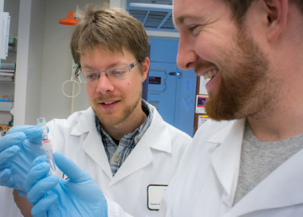

Though we often do not think about it, plants surround most of us on a daily basis as we work, travel, and eat. Most of us consume plant chemicals at three meals a day, take plant-derived chemicals as medicines, experience colors and aromas created by plant chemicals, and drink beverages based around plant chemistry. This unconscious ubiquity makes plants a fantastic tool with which to teach and learn about chemistry and biochemistry.
Classroom and lecture hall teaching
 Modern chemical biology requires fundamental knowledge of analytical and organic chemistry as well as biology and biochemistry. I focus on teaching the fundamentals of these classical disciplines from an integrated perspective.
Modern chemical biology requires fundamental knowledge of analytical and organic chemistry as well as biology and biochemistry. I focus on teaching the fundamentals of these classical disciplines from an integrated perspective.
Units taught:
- Analytical Chemistry of Plant Natural Products
- Chemistry of natural products in solution
- Chemical separation
- Spectroscopic analysis of natural products
- Mass spectrometric analysis
- Biochemistry and Evolution of Lineage-specific Metabolic Enzymes
- Major classes of specialized metabolites and their characteristics
- Major ways in which specialized metabolic enzymes differ from core metabolic enzymes
- Relationships between core metabolism and specialized metabolism
- Major hypothesis describing how specialized metabolic pathways evolve
Laboratory teaching and mentorship
The integrative nature of phytochemical research makes knowledge of multiple scientific disciplines indispensible. Developing such knowledge takes time and patience, but leads nearly invariably to a life-long passion for chemical and biological sciences as well as an engaging and satisfying career. I work with student researchers to develop this integrative knowledge and to apply it in their projects that support the overall aims of the research program. We also work together to identify and move the student down a career path.
Skills students learn while in the research program:
- Analytical chemistry: identification and quantification of plant chemicals
- Molecular biology: gene cloning and vector construction
- Computer programming: high-throughput data and information retrieval and analysis